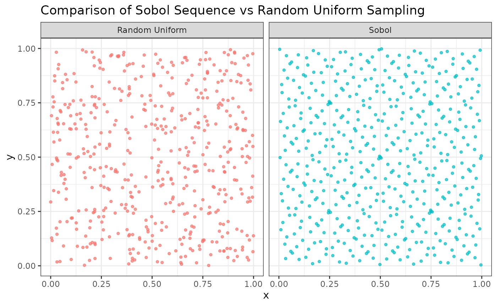
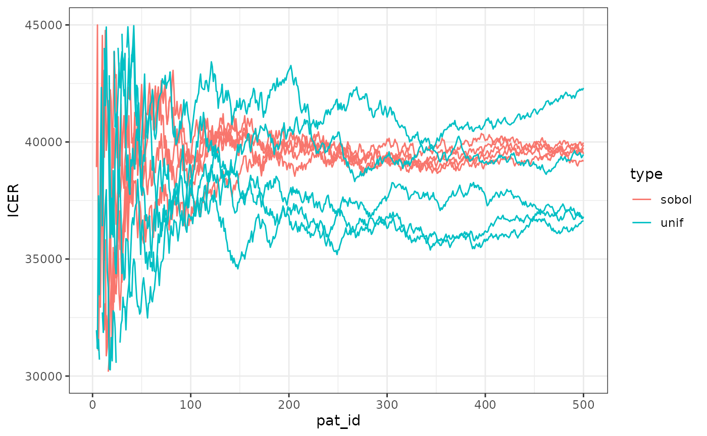
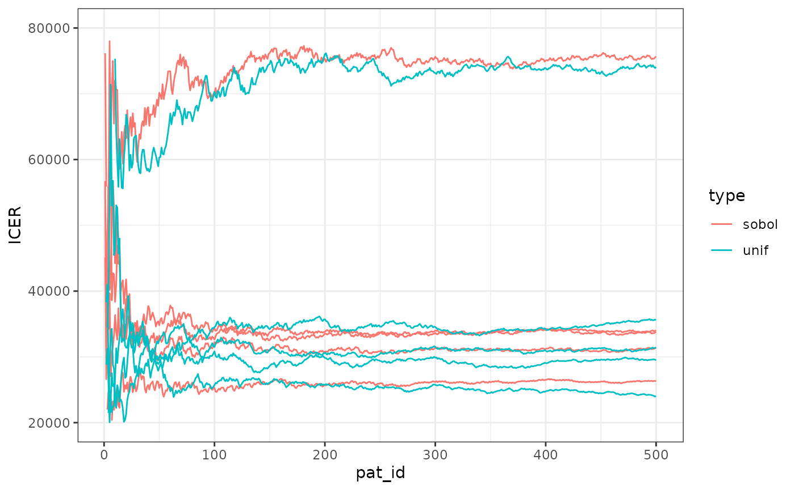

Example for a Sick-Sicker-Dead model, Quasi-Random Sobol Sequence vs. Purely Random
Javier Sanchez Alvarez
October 07, 2025
Source:vignettes/articles/example_ssd_sobol.Rmd
example_ssd_sobol.RmdMain options
library(WARDEN)
library(dplyr)
#>
#> Attaching package: 'dplyr'
#> The following objects are masked from 'package:stats':
#>
#> filter, lag
#> The following objects are masked from 'package:base':
#>
#> intersect, setdiff, setequal, union
library(ggplot2)
library(kableExtra)
#>
#> Attaching package: 'kableExtra'
#> The following object is masked from 'package:dplyr':
#>
#> group_rows
library(purrr)
if(!require(randtoolbox)){
install.packages("randtoolbox")
library(randtoolbox)
}
#> Loading required package: randtoolbox
#> Loading required package: rngWELL
#> This is randtoolbox. For an overview, type 'help("randtoolbox")'.Introduction
This document runs a discrete event simulation model in the context of a late oncology model to show how using quasi-random numbers can radically change convergence speed by using quasi-random sobol sequences instead of purely random numbers.
Sobol sequences are a deterministic way of generating numbers (between 0 and 1) in a way that fills the space very evenly. Several methods can be used to randomize the generation of these sequences, and to create multiple dimensions when we want to have multiple variables using these sequences. Sobol sequences can fill out the space more evenly than a random uniform distribution, so they can make a model converge faster.
This vignette explores how one can use sobol sequences to accelerate convergence and reduce the number of profiles needed.
n_points <- 500
sobol_seq <- randtoolbox::sobol(n = n_points, dim = 2)
random_points <- matrix(runif(n_points * 2), ncol = 2)
sobol_df <- data.frame(x = sobol_seq[, 1], y = sobol_seq[, 2], Type = "Sobol")
random_df <- data.frame(x = random_points[, 1], y = random_points[, 2], Type = "Random Uniform")
combined_df <- rbind(sobol_df, random_df)
ggplot(combined_df, aes(x = x, y = y, color = Type)) +
geom_point(alpha = 0.7, size = 1) +
facet_wrap(~Type) +
theme_bw() +
labs(
title = "Comparison of Sobol Sequence vs Random Uniform Sampling"
) +
theme(legend.position = "none")
When running a DES, it’s important to consider speed. Simulation based models can be computationally expensive, which means that using efficient coding can have a substantial impact on performance.
General inputs with delayed execution
When we generate inputs, we create two versions, one with random numbers generated from a uniform variable, and another generated from a sobol sequence.
randtoolbox::sobol(1,2, init = TRUE) #initialize
#> [,1] [,2]
#> [1,] 0.5 0.5
N <- 500
sims <- 5
common_all_inputs <-add_item(
util.sick = 0.8,
util.sicker = 0.5,
cost.sick = 3000,
cost.sicker = 7000,
cost.int = 1000,
coef_noint = log(0.2),
HR_int = 0.8,
drc = 0.035,
drq = 0.035
)
common_all_inputs_unif <- common_all_inputs %>%
add_item(random_n = runif(N),
random_n_death = runif(N)) #we draw N random uniform samples
common_all_inputs_sobol <- common_all_inputs %>%
add_item(random_sobol = (randtoolbox::sobol(N,2, init = TRUE) + matrix(rep(runif(2), each = N), nrow = N, byrow = TRUE)) %% 1,
random_n = random_sobol[,1],
random_n_death = random_sobol[,2]) #we draw n sobol sequences, we need to do a small trick as scrambling and seeds are temporarely deactivated within the randtoolbox package
common_pt_inputs <- add_item(death= max(0.0000001,qnorm(random_n_death[i], mean=12, sd=3))) #use random number for death to draw from a normal distribution
unique_pt_inputs <- add_item(fl.sick = 1,
q_default = util.sick,
c_default = cost.sick + if(arm=="int"){cost.int}else{0}) Events
Add Reaction to Those Events
evt_react_list <-
add_reactevt(name_evt = "sick",
input = {}) %>%
add_reactevt(name_evt = "sicker",
input = {
q_default <- util.sicker
c_default <- cost.sicker + if(arm=="int"){cost.int}else{0}
fl.sick <- 0
}) %>%
add_reactevt(name_evt = "death",
input = {
q_default <- 0
c_default <- 0
curtime <- Inf
}) Model
Model Execution
We run both versions of the model for a few simulations to showcase the different speed of convergence.
results_unif <- run_sim(
npats=N,
n_sim=sims,
psa_bool = FALSE,
arm_list = c("int", "noint"),
common_all_inputs = common_all_inputs_unif,
common_pt_inputs = common_pt_inputs,
unique_pt_inputs = unique_pt_inputs,
init_event_list = init_event_list,
evt_react_list = evt_react_list,
util_ongoing_list = util_ongoing,
cost_ongoing_list = cost_ongoing,
ipd = 2,
seed = 1
)
#> Analysis number: 1
#> Simulation number: 1
#> Patient-arm data aggregated across events by selecting the last value for input_out items.
#> Time to run simulation 1: 0.38s
#> Simulation number: 2
#> Time to run simulation 2: 0.53s
#> Simulation number: 3
#> Time to run simulation 3: 0.34s
#> Simulation number: 4
#> Time to run simulation 4: 0.34s
#> Simulation number: 5
#> Time to run simulation 5: 0.33s
#> Time to run analysis 1: 1.92s
#> Total time to run: 1.92s
#> Simulation finalized;
results_sobol <- run_sim(
npats=N,
n_sim=sims,
psa_bool = FALSE,
arm_list = c("int", "noint"),
common_all_inputs = common_all_inputs_sobol,
common_pt_inputs = common_pt_inputs,
unique_pt_inputs = unique_pt_inputs,
init_event_list = init_event_list,
evt_react_list = evt_react_list,
util_ongoing_list = util_ongoing,
cost_ongoing_list = cost_ongoing,
ipd = 2,
seed = 1
)
#> Analysis number: 1
#> Simulation number: 1
#> Patient-arm data aggregated across events by selecting the last value for input_out items.
#> Time to run simulation 1: 0.35s
#> Simulation number: 2
#> Time to run simulation 2: 0.37s
#> Simulation number: 3
#> Time to run simulation 3: 0.35s
#> Simulation number: 4
#> Time to run simulation 4: 0.35s
#> Simulation number: 5
#> Time to run simulation 5: 0.36s
#> Time to run analysis 1: 1.79s
#> Total time to run: 1.79s
#> Simulation finalized;Post-processing of Model Outputs
Summary of Results
Once the models have been run, we merge the data and generate the cumulative ICER to see how fast they converge to the final estimated value.
It can clearly be seen that the random uniform approach makes the model converge much more slowly than the sobol sequences.
summary_results_sim(results_unif[[1]])
#> int noint
#> costs 59,311 (57,721; 61,331) 52,090 (50,691; 53,841)
#> dcosts 0 (0; 0) 7,220 (7,030; 7,490)
#> lys 9.73 (9.59; 9.92) 9.73 (9.59; 9.92)
#> dlys 0 (0; 0) 0 (0; 0)
#> qalys 6.26 (6.19; 6.41) 6.07 (6; 6.21)
#> dqalys 0 (0; 0) 0.188 (0.177; 0.198)
#> ICER NaN (NA; NA) Inf (4,098,046,449,958,334,464; Inf)
#> ICUR NaN (NA; NA) 38,402 (36,636; 42,307)
#> INMB NaN (NA; NA) 2,201 (1,362; 2,608)
#> costs_undisc 74,738 (72,292; 77,497) 65,881 (63,744; 68,262)
#> dcosts_undisc 0 (0; 0) 8,857 (8,548; 9,234)
#> lys_undisc 12 (11.8; 12.3) 12 (11.8; 12.3)
#> dlys_undisc 0 (0; 0) 0 (0; 0)
#> qalys_undisc 7.6 (7.49; 7.82) 7.37 (7.25; 7.57)
#> dqalys_undisc 0 (0; 0) 0.236 (0.222; 0.25)
#> ICER_undisc NaN (NA; NA) Inf (Inf; Inf)
#> ICUR_undisc NaN (NA; NA) 37,578 (35,334; 41,552)
#> INMB_undisc NaN (NA; NA) 2,956 (1,878; 3,550)
#> c_default 59,311 (57,721; 61,331) 52,090 (50,691; 53,841)
#> dc_default 0 (0; 0) 7,220 (7,030; 7,490)
#> c_default_undisc 74,738 (72,292; 77,497) 65,881 (63,744; 68,262)
#> dc_default_undisc 0 (0; 0) 8,857 (8,548; 9,234)
#> q_default 6.26 (6.19; 6.41) 6.07 (6; 6.21)
#> dq_default 0 (0; 0) 0.188 (0.177; 0.198)
#> q_default_undisc 7.6 (7.49; 7.82) 7.37 (7.25; 7.57)
#> dq_default_undisc 0 (0; 0) 0.236 (0.222; 0.25)
summary_results_sim(results_sobol[[1]])
#> int noint
#> costs 59,690 (59,520; 59,864) 52,398 (52,230; 52,544)
#> dcosts 0 (0; 0) 7,292 (7,254; 7,320)
#> lys 9.74 (9.72; 9.78) 9.74 (9.72; 9.78)
#> dlys 0 (0; 0) 0 (0; 0)
#> qalys 6.24 (6.22; 6.26) 6.06 (6.04; 6.08)
#> dqalys 0 (0; 0) 0.184 (0.183; 0.185)
#> ICER NaN (NA; NA) Inf (Inf; Inf)
#> ICUR NaN (NA; NA) 39,650 (39,172; 39,973)
#> INMB NaN (NA; NA) 1,904 (1,833; 2,005)
#> costs_undisc 75,219 (74,954; 75,482) 66,248 (65,985; 66,470)
#> dcosts_undisc 0 (0; 0) 8,971 (8,915; 9,012)
#> lys_undisc 12 (12; 12.1) 12 (12; 12.1)
#> dlys_undisc 0 (0; 0) 0 (0; 0)
#> qalys_undisc 7.58 (7.56; 7.62) 7.36 (7.33; 7.39)
#> dqalys_undisc 0 (0; 0) 0.229 (0.227; 0.231)
#> ICER_undisc NaN (NA; NA) Inf (Inf; Inf)
#> ICUR_undisc NaN (NA; NA) 39,184 (38,637; 39,531)
#> INMB_undisc NaN (NA; NA) 2,477 (2,381; 2,622)
#> c_default 59,690 (59,520; 59,864) 52,398 (52,230; 52,544)
#> dc_default 0 (0; 0) 7,292 (7,254; 7,320)
#> c_default_undisc 75,219 (74,954; 75,482) 66,248 (65,985; 66,470)
#> dc_default_undisc 0 (0; 0) 8,971 (8,915; 9,012)
#> q_default 6.24 (6.22; 6.26) 6.06 (6.04; 6.08)
#> dq_default 0 (0; 0) 0.184 (0.183; 0.185)
#> q_default_undisc 7.58 (7.56; 7.62) 7.36 (7.33; 7.39)
#> dq_default_undisc 0 (0; 0) 0.229 (0.227; 0.231)
det_ipd_unif <- bind_rows(map(results_unif[[1]], "merged_df")) %>% mutate(type = "unif")
det_ipd_sobol <- bind_rows(map(results_sobol[[1]], "merged_df")) %>% mutate(type = "sobol")
merged_ipd <- rbind(det_ipd_unif,det_ipd_sobol) %>%
group_by(arm, type, simulation) %>%
mutate(cumul_total_qalys = cumsum(total_qalys)/pat_id,
cumul_total_costs = cumsum(total_costs)/pat_id) %>%
transmute(type, pat_id, arm, simulation, cumul_total_qalys, cumul_total_costs) %>%
tidyr::pivot_wider(names_from = arm, values_from = c(cumul_total_qalys,cumul_total_costs)) %>%
mutate(inc_costs = cumul_total_costs_int - cumul_total_costs_noint,
inc_qalys = cumul_total_qalys_int - cumul_total_qalys_noint,
ICER = inc_costs/ inc_qalys)
ggplot(merged_ipd, aes(x=pat_id,y=ICER, colour = type, fill = as.factor(simulation)))+
geom_line() +
theme_bw() +
ylim(30000,45000)
#> Warning: Removed 49 rows containing missing values or values outside the scale range
#> (`geom_line()`).
Model with PSA
Model Execution
#Load some data
list_par <- list(parameter_name = list("util.sick","util.sicker","cost.sick","cost.sicker","cost.int","coef_noint","HR_int"),
base_value = list(0.8,0.5,3000,7000,1000,log(0.2),0.8),
DSA_min = list(0.6,0.3,1000,5000,800,log(0.1),0.5),
DSA_max = list(0.9,0.7,5000,9000,2000,log(0.4),0.9),
PSA_dist = list("qnorm","qbeta_mse","qgamma_mse","qgamma_mse","qgamma_mse","qnorm","qlnorm"),
a=list(0.8,0.5,3000,7000,1000,log(0.2),log(0.8)),
b=lapply(list(0.8,0.5,3000,7000,1000,log(0.2),log(0.8)), function(x) abs(x/10)),
scenario_1=list(0.6,0.3,1000,5000,800,log(0.1),0.5),
scenario_2=list(0.9,0.7,5000,9000,2000,log(0.4),0.9)
)
sensitivity_inputs <-add_item(
indicators = if(sensitivity_bool){ create_indicators(sens,n_sensitivity*length(sensitivity_names),rep(1,length(list_par[[1]])))}else{
rep(1,length(list_par[[1]]))} #vector of indicators, value 0 everywhere except at sens, where it takes value 1 (for dsa_min and dsa_max, if not sensitivity analysis, then we activate all of them, i.e., in a PSA)
)
common_all_inputs <- add_item(
random_sobol_psa = (randtoolbox::sobol(1,7, init = TRUE) + matrix(rep(runif(7), each = 1), nrow = 1, byrow = TRUE)) %% 1
) %>%
add_item(
pick_val_v(base = list_par[["base_value"]],
psa = pick_psa(list_par[["PSA_dist"]],random_sobol_psa,list_par[["a"]],list_par[["b"]]),
sens = list_par[[sens_name_used]],
psa_ind = psa_bool,
sens_ind = sensitivity_bool,
indicator = indicators,
names_out = list_par[["parameter_name"]]
)
)
common_all_inputs_unif <- common_all_inputs %>%
add_item(random_n = runif(N),
random_n_death = runif(N)) #we draw N random uniform samples
common_all_inputs_sobol <- common_all_inputs %>%
add_item(random_sobol = (randtoolbox::sobol(N,2, init = TRUE) + matrix(rep(runif(2), each = N), nrow = N, byrow = TRUE)) %% 1,
random_n = random_sobol[,1],
random_n_death = random_sobol[,2]) #we draw n sobol sequences, we need to do a small trick as scrambling and seeds are temporarely deactivated within the randtoolbox package
results_unif_psa <- run_sim(
npats=N,
n_sim=sims,
psa_bool = TRUE,
arm_list = c("int", "noint"),
sensitivity_inputs = sensitivity_inputs,
common_all_inputs = common_all_inputs_unif,
common_pt_inputs = common_pt_inputs,
unique_pt_inputs = unique_pt_inputs,
init_event_list = init_event_list,
evt_react_list = evt_react_list,
util_ongoing_list = util_ongoing,
cost_ongoing_list = cost_ongoing,
ipd = 2,
seed = 1
)
#> Analysis number: 1
#> Simulation number: 1
#> Patient-arm data aggregated across events by selecting the last value for input_out items.
#> Time to run simulation 1: 0.35s
#> Simulation number: 2
#> Time to run simulation 2: 0.33s
#> Simulation number: 3
#> Time to run simulation 3: 0.57s
#> Simulation number: 4
#> Time to run simulation 4: 0.32s
#> Simulation number: 5
#> Time to run simulation 5: 0.34s
#> Time to run analysis 1: 1.91s
#> Total time to run: 1.91s
#> Simulation finalized;
results_sobol_psa <- run_sim(
npats=N,
n_sim=sims,
psa_bool = TRUE,
arm_list = c("int", "noint"),
sensitivity_inputs = sensitivity_inputs,
common_all_inputs = common_all_inputs_sobol,
common_pt_inputs = common_pt_inputs,
unique_pt_inputs = unique_pt_inputs,
init_event_list = init_event_list,
evt_react_list = evt_react_list,
util_ongoing_list = util_ongoing,
cost_ongoing_list = cost_ongoing,
ipd = 2,
seed = 1
)
#> Analysis number: 1
#> Simulation number: 1
#> Patient-arm data aggregated across events by selecting the last value for input_out items.
#> Time to run simulation 1: 0.33s
#> Simulation number: 2
#> Time to run simulation 2: 0.34s
#> Simulation number: 3
#> Time to run simulation 3: 0.34s
#> Simulation number: 4
#> Time to run simulation 4: 0.35s
#> Simulation number: 5
#> Time to run simulation 5: 0.53s
#> Time to run analysis 1: 1.9s
#> Total time to run: 1.9s
#> Simulation finalized;Post-processing of PSA Outputs
Summary of Results
Once the models have been run, we merge the data and generate the cumulative ICER to see how fast they converge to the final estimated value.
It can clearly be seen that the random uniform approach makes the model converge much more slowly than the sobol sequences.
summary_results_sim(results_unif_psa[[1]])
#> int noint
#> costs 60,135 (58,358; 63,200) 53,027 (51,433; 55,367)
#> dcosts 0 (0; 0) 7,108 (5,895; 7,833)
#> lys 10 (9.85; 10.2) 10 (9.85; 10.2)
#> dlys 0 (0; 0) 0 (0; 0)
#> qalys 6.33 (5.57; 6.79) 6.12 (5.47; 6.54)
#> dqalys 0 (0; 0) 0.21 (0.093; 0.25)
#> ICER NaN (NA; NA) Inf (-4,409,497,606,028,984,320; Inf)
#> ICUR NaN (NA; NA) 38,930 (24,034; 74,072)
#> INMB NaN (NA; NA) 3,388 (-2,237; 6,369)
#> costs_undisc 73,464 (71,670; 76,813) 64,968 (62,912; 67,508)
#> dcosts_undisc 0 (0; 0) 8,495 (7,051; 9,305)
#> lys_undisc 12 (11.8; 12.3) 12 (11.8; 12.3)
#> dlys_undisc 0 (0; 0) 0 (0; 0)
#> qalys_undisc 7.48 (6.62; 7.99) 7.22 (6.51; 7.69)
#> dqalys_undisc 0 (0; 0) 0.254 (0.112; 0.302)
#> ICER_undisc NaN (NA; NA) Inf (-5,238,257,628,334,784,512; Inf)
#> ICUR_undisc NaN (NA; NA) 38,554 (23,613; 73,550)
#> INMB_undisc NaN (NA; NA) 4,183 (-2,637; 7,879)
#> c_default 60,135 (58,358; 63,200) 53,027 (51,433; 55,367)
#> dc_default 0 (0; 0) 7,108 (5,895; 7,833)
#> c_default_undisc 73,464 (71,670; 76,813) 64,968 (62,912; 67,508)
#> dc_default_undisc 0 (0; 0) 8,495 (7,051; 9,305)
#> q_default 6.33 (5.57; 6.79) 6.12 (5.47; 6.54)
#> dq_default 0 (0; 0) 0.21 (0.093; 0.25)
#> q_default_undisc 7.48 (6.62; 7.99) 7.22 (6.51; 7.69)
#> dq_default_undisc 0 (0; 0) 0.254 (0.112; 0.302)
summary_results_sim(results_sobol_psa[[1]])
#> int noint
#> costs 60,571 (57,975; 65,556) 53,370 (52,029; 57,428)
#> dcosts 0 (0; 0) 7,200 (5,946; 8,128)
#> lys 10 (9.99; 10.1) 10 (9.99; 10.1)
#> dlys 0 (0; 0) 0 (0; 0)
#> qalys 6.31 (5.59; 6.83) 6.1 (5.5; 6.59)
#> dqalys 0 (0; 0) 0.203 (0.092; 0.242)
#> ICER NaN (NA; NA) Inf (Inf; Inf)
#> ICUR NaN (NA; NA) 40,231 (26,299; 75,677)
#> INMB NaN (NA; NA) 2,970 (-2,366; 5,358)
#> costs_undisc 73,994 (70,836; 80,126) 65,368 (63,721; 70,376)
#> dcosts_undisc 0 (0; 0) 8,626 (7,115; 9,750)
#> lys_undisc 12 (12; 12.1) 12 (12; 12.1)
#> dlys_undisc 0 (0; 0) 0 (0; 0)
#> qalys_undisc 7.45 (6.66; 8.07) 7.21 (6.55; 7.78)
#> dqalys_undisc 0 (0; 0) 0.244 (0.111; 0.289)
#> ICER_undisc NaN (NA; NA) Inf (Inf; Inf)
#> ICUR_undisc NaN (NA; NA) 40,091 (26,173; 75,312)
#> INMB_undisc NaN (NA; NA) 3,590 (-2,809; 6,477)
#> c_default 60,571 (57,975; 65,556) 53,370 (52,029; 57,428)
#> dc_default 0 (0; 0) 7,200 (5,946; 8,128)
#> c_default_undisc 73,994 (70,836; 80,126) 65,368 (63,721; 70,376)
#> dc_default_undisc 0 (0; 0) 8,626 (7,115; 9,750)
#> q_default 6.31 (5.59; 6.83) 6.1 (5.5; 6.59)
#> dq_default 0 (0; 0) 0.203 (0.092; 0.242)
#> q_default_undisc 7.45 (6.66; 8.07) 7.21 (6.55; 7.78)
#> dq_default_undisc 0 (0; 0) 0.244 (0.111; 0.289)
psa_ipd_unif <- bind_rows(map(results_unif_psa[[1]], "merged_df")) %>% mutate(type = "unif")
psa_ipd_sobol <- bind_rows(map(results_sobol_psa[[1]], "merged_df")) %>% mutate(type = "sobol")
merged_ipd_psa <- rbind(psa_ipd_unif,psa_ipd_sobol) %>%
group_by(arm, type, simulation) %>%
mutate(cumul_total_qalys = cumsum(total_qalys)/pat_id,
cumul_total_costs = cumsum(total_costs)/pat_id) %>%
transmute(type, pat_id, arm, simulation, cumul_total_qalys, cumul_total_costs) %>%
tidyr::pivot_wider(names_from = arm, values_from = c(cumul_total_qalys,cumul_total_costs)) %>%
mutate(inc_costs = cumul_total_costs_int - cumul_total_costs_noint,
inc_qalys = cumul_total_qalys_int - cumul_total_qalys_noint,
ICER = inc_costs/ inc_qalys)
ggplot(merged_ipd_psa, aes(x=pat_id,y=ICER, colour = type, fill = as.factor(simulation)))+
geom_line() +
theme_bw() +
ylim(20000,80000)
#> Warning: Removed 7 rows containing missing values or values outside the scale range
#> (`geom_line()`).